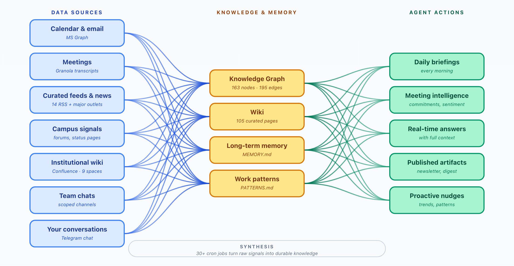
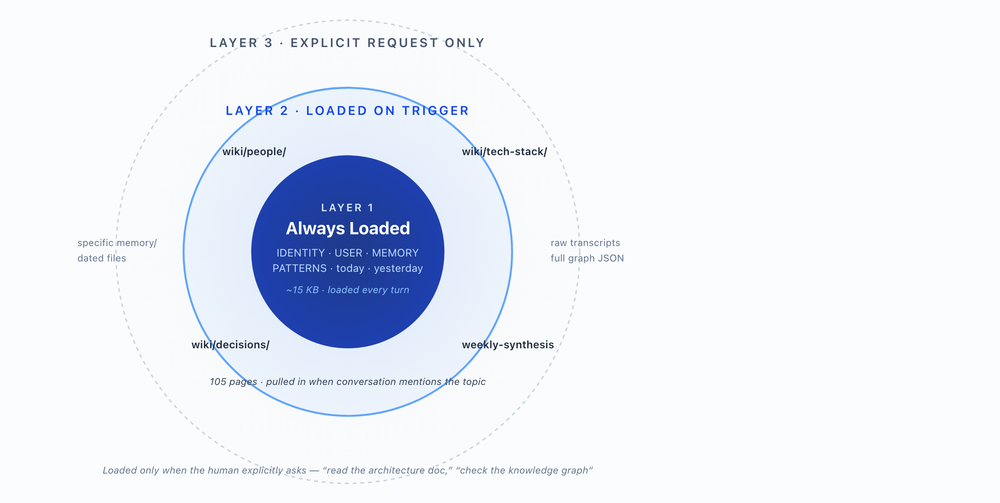
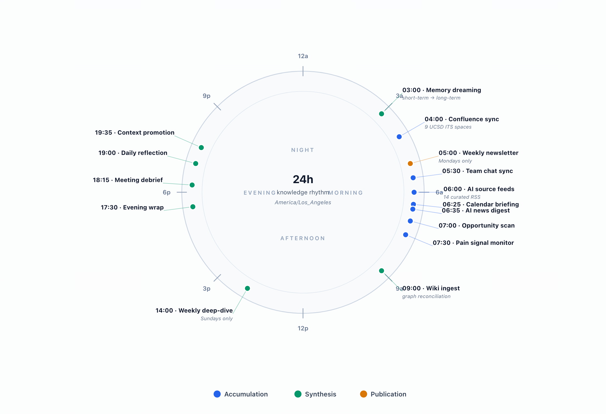
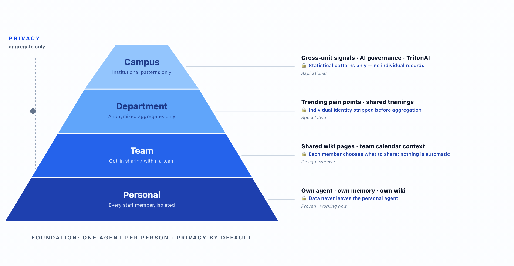

Anthropic, OpenAI, and Google are racing to make context the moat — by integrating your personal and enterprise data into their memory systems.
The more useful they get, the harder it is to leave.
This talk is about building that memory layer as yours instead.
An open-source agent runtime that connects chat, tools, memory, and automation into one self-hosted system. 347k+ GitHub stars · MIT licensed · runs entirely on your infrastructure.



45 of 46 enabled jobs run on TritonAI — UCSD’s institutional gateway, on-prem at SDSC.
One job stays on OpenAI Codex as a cross-provider canary.
| Tier | Alias | Provider · Model | Use | Jobs |
|---|---|---|---|---|
| Light monitor | tritonai-haiku | TritonAI · Claude Haiku 4.5 | Token refresh · MS Graph sync · status pings | 13 |
| Synthesis & agentic | kimi-k2.5 | TritonAI · Moonshot Kimi K2.5 | Morning briefing · daily reflection · opportunity scan | 10 |
| Single-shot agentic | gpt-oss-120b | TritonAI · OpenAI gpt-oss 120B | Security audits · candidate scoring · one-shot decisions | 7 |
| Long-form generation | mistral-large-3 | TritonAI · Mistral Large 3 675B | LinkedIn drafts · UCSD newsletter · wiki ingestion | 5 |
| Heavy reasoning | tritonai-opus | TritonAI · Claude Opus 4.7 | Architecture review · weekly pattern extraction · decision archaeology | 3 |
| Mid-tier multimodal | gemma-4 | TritonAI · Gemma 4 26B | Meeting prep · relationship mapping · image-aware tasks | 3 |
| Fastest light monitor | tritonai-mistral-small | TritonAI · Mistral Small 3.2 | Hourly henry-api health · infrastructure pings | 3 |
| Provider diversity | tritonai-nemotron-instant | TritonAI · NVIDIA Nemotron 3 | Weekly memory prune (diversity sample) | 1 |
| Cross-provider canary | codex | OpenAI Codex · gpt-5.5 | Provider-quota canary — detects TritonAI outages | 1 |
Same items also queue as cards on Mission Control ↗ — Telegram for the urgent, the dashboard for the rest.
Each card below is what actually lands in the corresponding output file or feed.
All of these also land as reviewable cards on Mission Control ↗ — the dashboard where I triage, accept, defer, or kill each item.
Most of these are implementation work, not research. The hard part — the knowledge layer — is already built.
